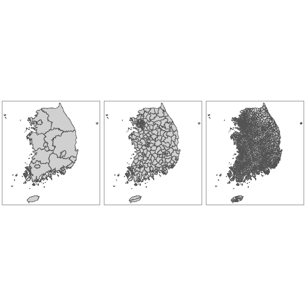

데이터 과학
Kormaps, leaflet 지리정보 시각화 기초
학습 목표
- 위도경도 정보 활용
ggmap지리정보 시각화한다. Kormaps지리정보 시각화한다.
1. Kormaps 지리정보 시각화 1
2010년 시/도, 시/군/구, 읍/면/동 행정구역지도 3개를 갖고 인구총조사(2010년) 기준 지리정보를 제공하는 R 팩키지를 카톨릭대학교 문건웅 교수님께서 개발하여 공개하였다.
submap 관련 일부 동작이 되지 않는 경우도 있지만, 빠르게 인구총조사결과를 대한민국 지리정보로 도식화하는데 좋은 기능을 제공하고 있다.
Kormaps 팩키지를 설치하고, 주제도 팩키지 tmap 도 불러온다.
#install.packages("devtools") # 한번 설치한 경우에는 다시 설치할 필요 없습니다.
#devtools::install_github("cardiomoon/Kormaps")
library(Kormaps)
library(tmap)
library(raster)2010년 시/도, 시/군/구, 읍/면/동 3단계 Kormaps 팩키지에 내장된 행정구역지도는 다음과 같다.
p1 <- qtm(kormap1)
p2 <- qtm(kormap2)
p3 <- qtm(kormap3)
multiplot(p1, p2, p3, cols = 3)
submap() 함수를 사용하여 대한민국 특정 지역을 뽑아내서 별도로 지리정보를 시각화 할 수 있다.
daejeon.lvl.3 <- submap(korpopmap3, enc2utf8("대전"))
qtm(daejeon.lvl.3,"가구_계_가구")+tm_layout(fontfamily="AppleGothic")
참고, names(korpopmap1@data) 명령어를 통해서 인구총조사(2010년)에 포함된 데이터도 확인할 수 있다.
2. Kormaps, leaflet 팩키지 활용 지리정보 시각화 2
leaflet 팩키지는 인터랙티브 지도로 가장 인기있는 오픈소스 자바스크립트 라이브러리로 뉴욕타임즈, 워싱턴포스트, GitHub, 플리커 같은 국내외 유명 웹사이트에서 사용되고 있다.
library(leaflet)
blue_palette <- colorNumeric(palette="Blues",domain=korpopmap3$가구_계_가구)
households <- paste0(korpopmap3@data$name,": ",korpopmap3@data$가구_계_가구)
leaflet(korpopmap3) %>%
addTiles() %>%
addPolygons(stroke=TRUE,
smoothFactor = 0.2,
fillOpacity = .8,
popup=households,
color= ~blue_palette(korpopmap3@data$가구_계_가구))FALSE Error in html_screenshot(x): Please install the webshot package (if not on CRAN, try devtools::install_github("wch/webshot"))